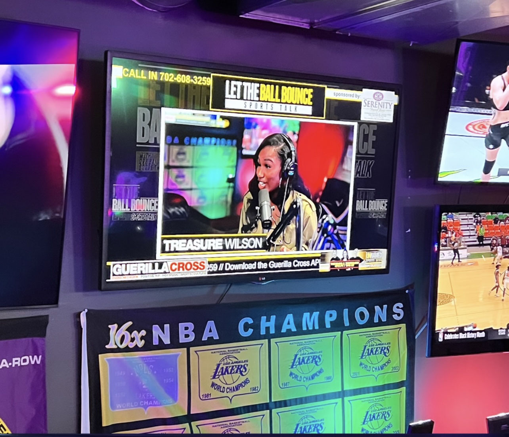

Treasure is currently a full-time employee for the sports media company, Playmaker. She is a storyteller, snapchat narrator, and host. In addition, she runs a podcast with her co-host, called Pretty Big Plays.
They talk about various media and entertainment news, but they mainly discuss things happening within the NBA and NFL Sports. In addition, she is an intern for Miami Athletics and works with the Miami Hurricanes football and basketball team.
Her previous professional work includes social media work for two social media start-ups, where she has learned how to grow social channels from scratch. She has also worked for the National Football League as a production assistant.
At the University of Miami, Treasure is an anchor and reporter for SportsDesk, Vice President of The National Association of Black Journalists, and a Miami Hurricane Sports Photographer.
She is also program chair for Alpha Kappa Alpha Sorority Incorporated, Iota Nu Chapter, at the University of Miami.